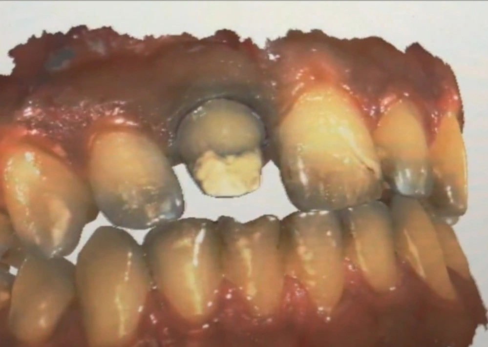

📝 توضیح بالینی
در درمانهای دندان قدامی که نیازمند پست، کور و روکش سرامیکی هستند، بازسازی رنگ یکی از نکات کلیدی و چالشبرانگیز است.
گزینه های متعددی برای انتخاب پست و کور وجود دارد، از جمله پستهای پیشساخته و فایبر پست، و کورها نیز در جنسهای گوناگون موجود هستند.
در نواحی زیبایی، استفاده از کور کامپوزیتی معمولاً مشکل زیبایی ایجاد نمیکند. با این حال، در صورتی که از پست و کور ریختگی استفاده شده باشد، احتمال بروز سایهی خاکستری از زیر روکش وجود دارد.
برای مقابله با این مسئله، میتوان از کامپوزیتهای مخصوصی به نام اوپکر بهره برد.
این کامپوزیتها رنگ سفید اوپکی دارند و با پیادهسازی پروتکل باند به فلز، میتوانند به کور فلزی باند شوند و رنگ فلز را بپوشانند.
این روش به رفع مشکل ته رنگ خاکستری کمک میکند و زیبایی نهایی ترمیم را بهبود میبخشد.